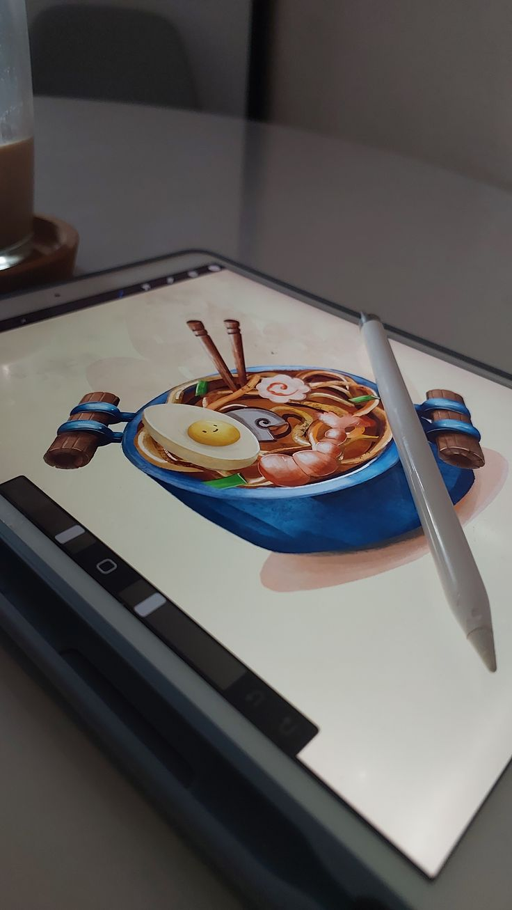
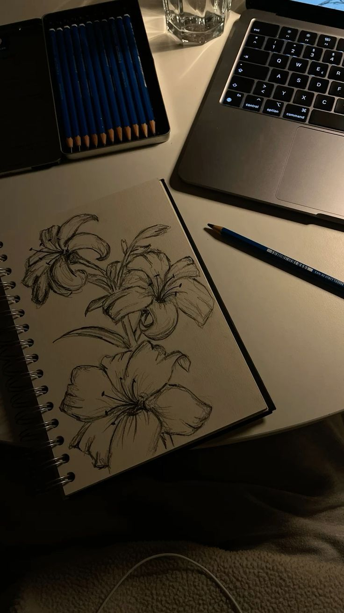
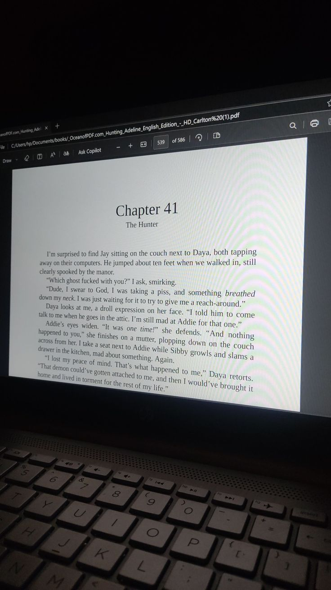
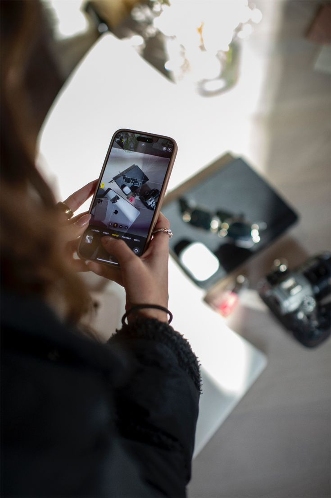

Hobbies
Beyond office administration, I find balance through art and expression.

Drawing & Digital Art
I enjoy bringing imagination to life through digital canvases. This hobby fuels my creativity and helps me understand color harmony and visual storytelling.

Sketching
Traditional sketching is where I practice my fundamentals. There is something therapeutic about the feel of a pencil on paper and the process of shading.

Writing
Writing allows me to organize my thoughts and express my ideas clearly. It complements my professional goal of becoming a skilled administrator.

Photography
Capturing life moments is essential to me. I enjoy finding the perfect angle and lighting to preserve memories forever.